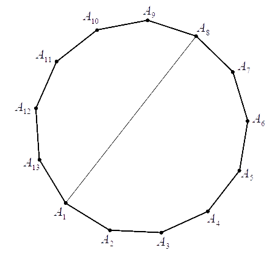

Matura podstawowa - kurs - część 62 - zadania
Ze zbioru siedmiu liczb naturalnych \(\{1, 2, 3, 4, 5, 6, 7\}\) losujemy dwie różne
liczby. Oblicz prawdopodobieństwo zdarzenia polegającego na tym, że większą z wylosowanych liczb
będzie liczba \(5\).
\(\frac{4}{21}\)
Wszystkie losy loterii fantowej zostały ponumerowane kolejno od numeru \(10000\) do
numeru \(99999\). Te losy, którym nadano numery o sumie cyfr równej trzy, są wygrywające, pozostałe
losy są przegrywające. Na tej loterii będziemy losować jeden los. Oblicz prawdopodobieństwo
wyciągnięcia losu przegrywającego. Wynik przedstaw w postaci ułamka dziesiętnego w przybliżeniu do
czwartego miejsca po przecinku.
\(0{,}9998\)
Na rysunku jest przedstawiony trzynastokąt wypukły o kolejnych wierzchołkach od
\(A_1\) do \(A_{13}\) oraz przekątna \(A_1A_8\) tego wielokąta.  Spośród wszystkich \(65\) przekątnych tego wielokąta
losujemy jedną. Oblicz prawdopodobieństwo zdarzenia polegającego na tym, że wylosowana przekątna
będzie przecinała się z przekątną \(A_1A_8\) w punkcie leżącym wewnątrz trzynastokąta. Wynik zapisz
w postaci ułamka nieskracalnego.
\(\frac{6}{13}\)
Spośród wierzchołków sześcianu wybieramy losowo dwa różne wierzchołki. Oblicz
prawdopodobieństwo wylosowania wierzchołków, które są końcami tej samej przekątnej ściany sześcianu.
\(\frac{3}{7}\)
Ze zbioru wszystkich krawędzi (krawędzi bocznych i krawędzi podstawy) ostrosłupa
prawidłowego pięciokątnego losujemy jedną krawędź, a następnie z pozostałych krawędzi losujemy
drugą. Oblicz prawdopodobieństwo zdarzenia polegającego na tym, że wylosowane krawędzie będą miały
wspólny wierzchołek.
\(\frac{5}{9}\)
Ze zbioru wszystkich liczb naturalnych dwucyfrowych losujemy kolejno dwa razy po
jednej liczbie bez zwracania. Oblicz prawdopodobieństwo zdarzenia polegającego na tym, że suma
wylosowanych liczb będzie równa \(30\). Wynik zapisz w postaci ułamka zwykłego nieskracalnego.
\(\frac{1}{801}\)
Rzucamy trzy razy symetryczną monetą. Niech \(p\) oznacza prawdopodobieństwo
otrzymania dokładnie jednego orła w tych trzech rzutach. Wtedy
A.\( 0\le p\le 0{,}25 \)
B.\( 0{,}25\le p\le 0{,}4 \)
C.\( 0{,}4\le p\le 0{,}5 \)
D.\( p\gt 0{,}5 \)
B